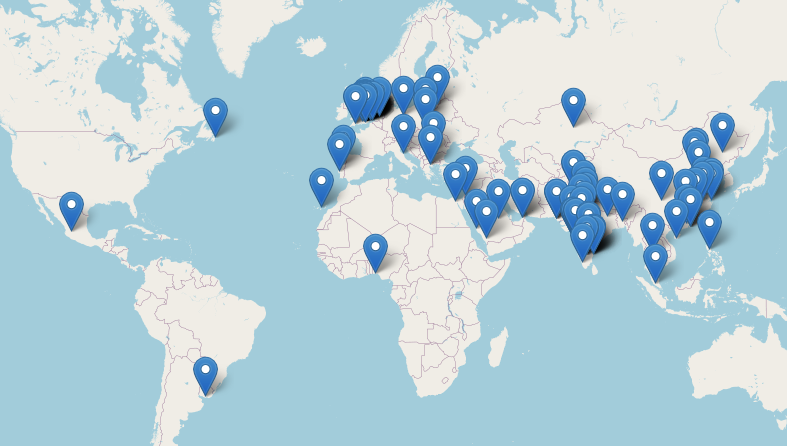

MLEnd Spoken Numerals
A dataset for intonation and diverse English speech recognition

About Dataset
Speech recognition has improved dramatically over the past years due to advances in machine learning and the availability of speech data. Speech recognition is nowadays powering a multitude of applications, from home virtual assistants to call centers, and it is expected to be integrated in many more systems, some of which might be critical for inclusivity.
Machine learning solutions are however constrained by the quality of the data they are trained on. If our data does not represent our target population well, we can only aspire for our solution to work well on the sub-population that our data represents. In other words, solutions from non-representative data are inevitably biased towards a sub-population. In the context of speech recognition, machine learning solutions trained on non-representative datasets will not perform well on any sub-population that is not represented well, which can have a detrimental impact on inclusivity.
The MLEnd Spoken Numerals dataset is a collection of more than 32k audio recordings produced by 154 speakers. Each audio recording corresponds to one English numeral (from "zero" to "billion") that is read using different intonations ("neutral", "bored", "excited" and "question"). Our participants have a diverse background: 31 nationalities and 42 unique languages are represented in the MLEnd Spoken Numerals dataset. This dataset comes with additional demographic information about our participants. The MLEnd datasets have been created by students at the School of Electronic Engineering and Computer Science, Queen Mary University of London. Other datasets include the MLEnd Hums and Whistles dataset, also available on Kaggle. Do not hesitate to reach out if you want to know more about how we did it.
Enjoy!
Dataset
Here are some samples of Spoken Numeral dataset.
| 0: Neutral | 1: Bored | 2: Excited |
| 10: Question | 15: Neutral | 60: Excited |
| 1000: Question | 1M: Bored | 1B: Neutral |
Here is an overview of the speakers' demographics in terms of their nationality.

Download Data
Install mlend
To download the Spoken Numerals dataset, first step is to install mlend library. Use pip to install library.
pip install mlend
Download subset of data
To download subset of the data, only 2 numerals 1 and 100 with neutral intonation, use following piece of code:
import mlend
from mlend import download_spoken_numerals, spoken_numerals_load
subset = {'Numeral':[1,100],'Intonation':['neutral']}
datadir = download_spoken_numerals(save_to = '../MLEnd',
subset = subset,verbose=1,overwrite=False)
This code will download data in given path (‘../MLEnd’) and returns the path of data as datadir (='../MLEnd/spoken_numerals')
Download full dataset
To download full dataset, use empty subset, as in following piece of code:
import mlend
from mlend import download_spoken_numerals, spoken_numerals_load
subset = {}
datadir = download_spoken_numerals(save_to = '../MLEnd',
subset = subset,verbose=1,overwrite=False)
Load the Data and benchmark sets
After downloading partial or full dataset, mlend allows you to load the dataset with specified method of training and testing split.
Note, mlend doesn’t read and load the audio files in memory, instead it reads the path of files, for further reading and cleaning data as per requirement of the model. For more details, check help(spoken_numerals_load).
import mlend
from mlend import download_spoken_numerals, spoken_numerals_load
subset = {'Numeral':[1,100],'Intonation':['neutral']}
datadir = download_spoken_numerals(save_to = '../MLEnd',
subset = subset,verbose=1,overwrite=False)
TrainSet, TestSet, MAPs = spoken_numerals_load(datadir_main = datadir,
train_test_split = 'Benchmark_A',
verbose=1,encode_labels=True)
Explore more
A Starter-kitSpoken-Numerals |
A Starter-kitSpoken-Numerals |